Secrets manipulation using folders
Now that both organisations have been discovered, scanned and the proxy connection is working, it's time to start organising the secrets and corresponding access rights to secrets. The combined IT Security has been defined as following:
- IT Admins from the Thylab domain are allowed to use and see ALL secrets to access ALL servers AND must comment with checkout why they need access to the Thylab servers. After the session closes, the password needs to be rotated
- IT Admins from the Greensafe domain are allowed to ONLY see the secrets of their Legacy environment and use them on their servers and are allowed to retrieve passwords
- The UNIX admins are allowed to see ALL unix related secrets and can use them to access ALL Unix related machines but are not allowed to see the passwords
- For all users
- all sessions (RDP and SSH) MUST run proxied
Define policies
To make sure possibilities are enforced upon users, polices can be used. The policies can be set on a per secret bases, or in a more scalable way on folders.
- Stay on the Client vm
- Navigate to Administration >> > Actions > Secret Policies
-
One policy already exists IT Server Team - Domain Admin Policy, click on the policy to see the settings. Changing between the tabs have to be done.
-
Remote Password Changing
- Auto Change - Default Only - Unchecked (= Enforced)
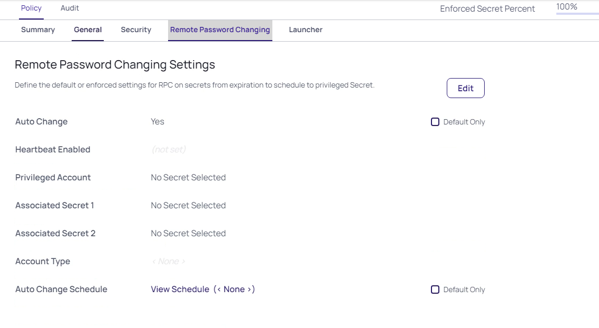
-
Security tab
- Require Checkout - Yes - Default Only - Checked
- Custom Check Out Interval - Default - 120
- Require Comment - Yes - Default Only - Checked

-
-
Open the Summary Tab and click Edit
-
Change the following for the policy
- Name: Policy - Thylab comment on access to Windows secrets
- Description: Comments Required for access to the secrets and check out/in, RPC enabled
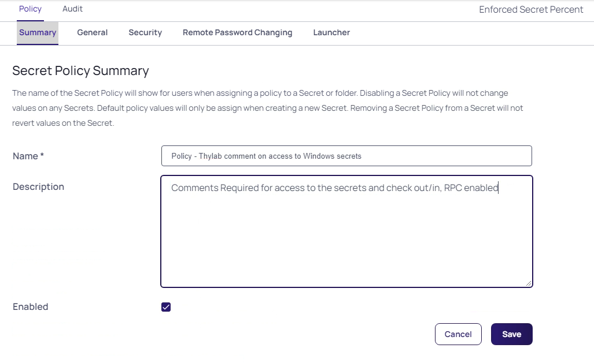
-
Click Save
-
Open the Security tab and set the following after clicking Edit
- Require Check Out: Yes - Default Only - Unchecked
- Custom check Out Interval: 60 - Default Only - Unchecked
- Change Password on check In: Yes - Default Only - Unchecked
- Require Comment: Yes - Default Only - Unchecked
- Enable proxy: Yes - Default Only - Unchecked
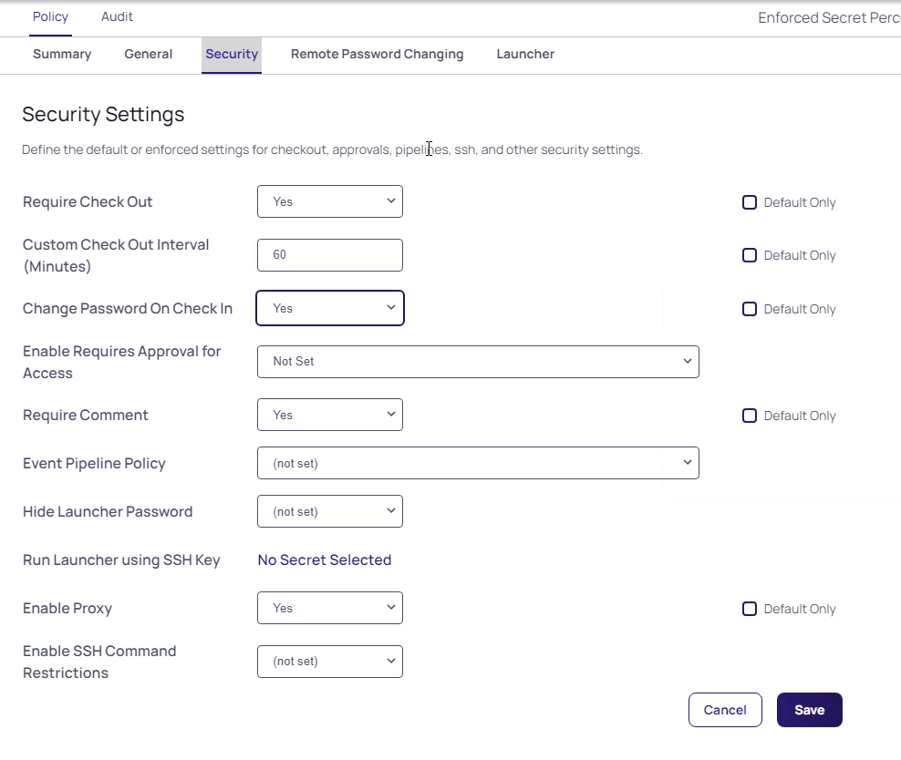
-
Click Save and click OK on the Confirm message
-
Open the Remote Password Changing tab and set the following after clicking Edit
- Heartbeat Enabled: Yes - Default Only - Unchecked
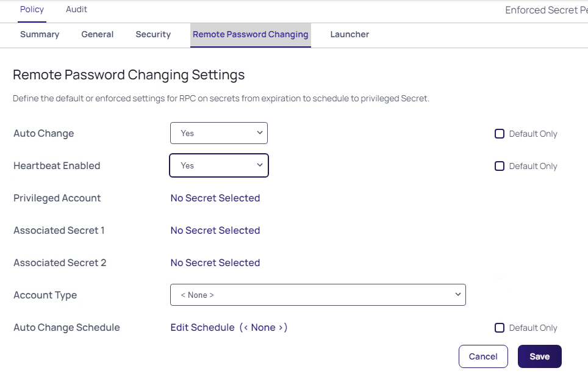
-
Click Save and click OK on the Confirm message
- Navigate to Administration >> > Actions > Secret Policies
- Create a new policy by clicking Add and use the following parameters:
- Name: Policy - Proxy all sessions
- Description: Policy to use only proxy connections
- Enabled: Checked
-
Open the Security tab and set the following after clicking Edit
- Enable Proxy: Yes - Default Only - Unchecked
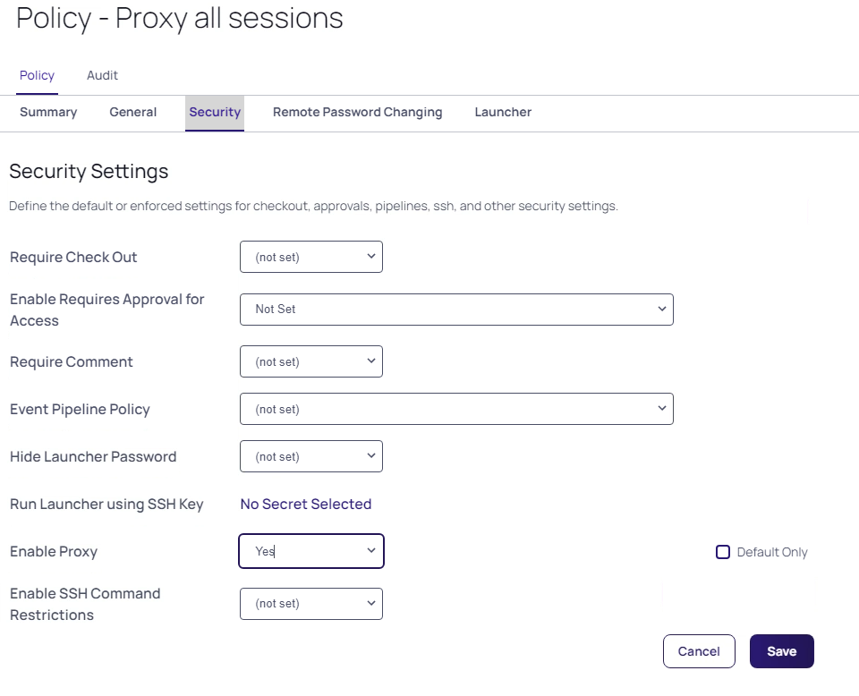
-
Click Save and click OK on the Confirm message
-
Click Secret Policy (in the top of the screen) to return to all the policies

-
Create a new policy and use the following parameters:
- Name: Policy - Unix hide password with proxy
- Description: Policy for Unix systems to hide passwords and use the proxy
- Enabled: Checked
-
On the Security tab
- Hide Launcher Password: Yes - Default Only - Unchecked
- Enable Proxy: Yes - Default Only - Unchecked
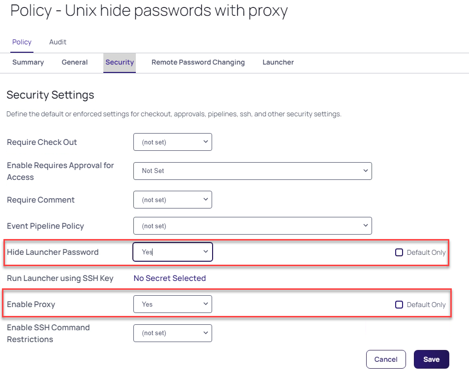
-
Click Save and click OK on the Confirm message
Configure the new folder structure and policies
To be able to assign the correct rights, the folder structure needs to be more hierarchial than it is today. All is now from one organisation's PoV. 1. Navigate to Secrets >> 2. Right-click the IT Team folder and select Edit Folder 3. Click the Permissions tab and Click Edit 4. Add Team_UNIXAdmins, Team_UNIXDBA, Team_IT and Team_Heldesk by clicking them and dragging to the left where the other accounts are shown 5. Click Save 2. Navigate to Secrets >> > IT Team > IT - Server Team 3. Right-click the IT - Server Team folder and select Edit Folder 4. Click Edit next to Secret Policy and select Proxy all sessions 5. Click Save 11. Click the Permissions tba and click Edit 12. Add Team_IT and Team_Helpdesk 13. Click Save 14. Create a folder called Thylab under IT - Server Team by right clicking this folder and select Add Subfolder

- Navigate back to IT - Server Team
-
Select the secrets Checkout Example, RFA Example, Server team - Domain Admin and Click Bulk Actions at the bottom of the screen
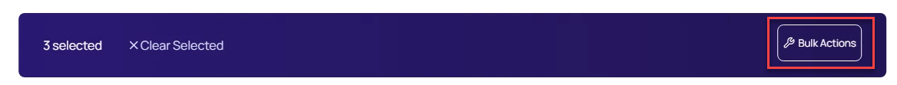
-
Click Move To Folder
-
Navigate to IT Team > IT - Server Team > Thylab and click Move Secrets

-
Click Close after the Bulk Progress is ready
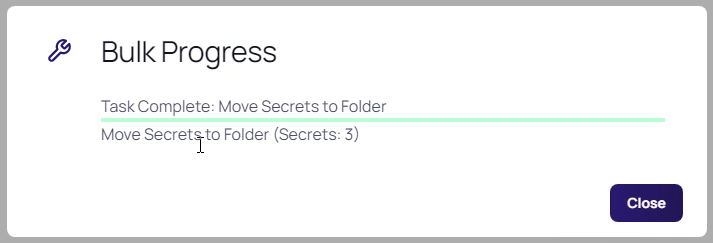
-
Only one secret should be left in the folder Greensafe - Domain Controller
- Right-click the Thylab folder and select Edit Folder
- Click Edit next to Secret Policy and select Policy - Thylab comment on access to Windows secrets
- Click Permissions tab
- Click Edit
- Uncheck Inherit Permissions
-
Remove ALL greensafe.lab groups by clicking the Bin ico when hoovering over the account

-
Click Save
- Right-click the IT - Unix Team folder and select Edit Folder
- Click Edit next to Secret Policy and select Policy - Unix hide password with proxy
- Click Save
- Click Permissions tab
- Click Edit
- Add Team_UNIXAdmins, Team_UNIXDBA, Team_IT and Team_Heldesk
-
Click Save

Add secret for the Greensafe domain
- In the IT Secrets > IT - Server Team folder where there is only one secret add the following secret
- Secret Template: Windows Account
- Secret name: Greensafe - DB Server
- Machine: db-server
- Username: afoster
- Password: Centr1fy
- Site: greensafe.lab

- Click Create Secret
Test the configuration
Now that the setup is ready to be used, testing is in order. For this test the client machine will be used.
Note The passwords as you shown in the screenshots will be different per installation and will not reflect your infrastructure
- Logout the current user of the Secret Server UI by clicking the icon in the top right corner and select Log Out
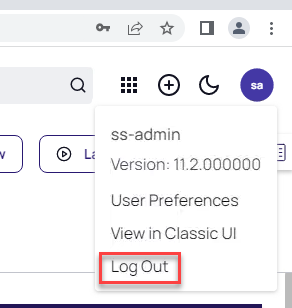
- Click Login
- Login as user krogers with Centr1fy in the Greensafe domain
-
Kim Rogers should only see the IT Team > IT - Unix Team folders and the corresponding secrets
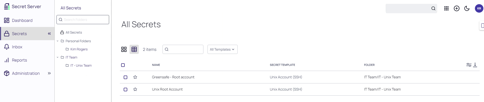
-
Click one of the secrets. The Password Field will not be shown as set by the policy

-
Open the Security tab
- Scroll down and see that there is no way to make any changes to the settings
-
Navigate back to the General tab and run the PuTTY launcher and see that the proxy banner is shown. That proofs that the connection is made via the SSH proxy

-
Close the session using CTRL+D
- Logout of the Secret Server UI by clicking the initials KR in the upper right corner and select Log Out
- Click Log in and log in as LScott with Centr1fy and the Greensafe domain
-
She has access to the Greensafe Windows servers and can see the password

-
Open the Security tab and see that the Enable Proxy is enabled and can not be unchecked
- Switch back to the General tab and run the RDP Launcher
- Close the RDP session after you see the desktop
- Logout of the Secret Server UI by clicking the initials LS in the upper right corner and select Log Out
- Login the Secret Server UI as dhughes with Thycotic@2022! and the Thylab domain, click Continue on the Welcome screen
-
This user should have besides the IT - Server Team folder also the Thylab folder
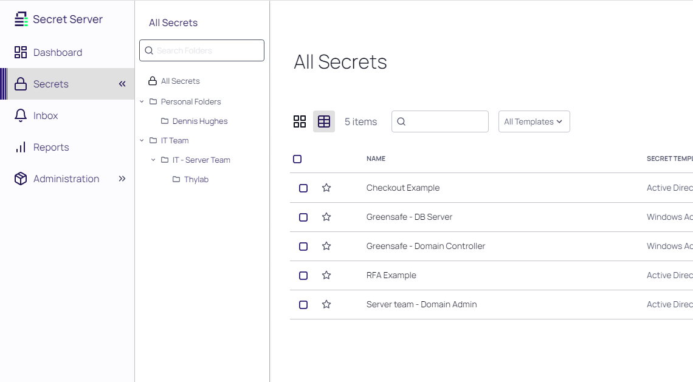
-
Navigate to the Thylab folder and open Server Team - Domain Admins secret
- Due to the policy you have to leave a comment and check out the secret
- Leave a comment and click Check Out Secret
-
Click the EYE icon and see the current password as that right is given
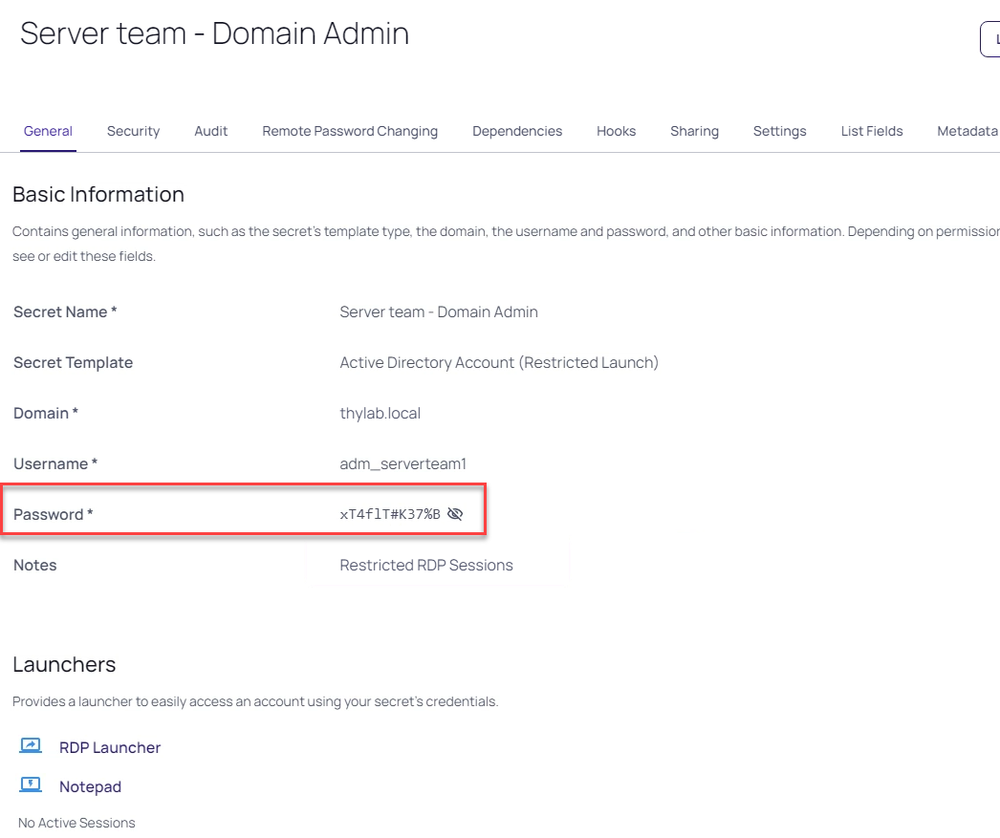
-
Run the RDP Launcher and select DC1 you see and select thylab.local as the Proxy Site then click Launch Now
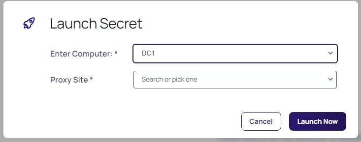
Note The dropdown box is due to the Secret Template that is used at the time the secret has been created. We will dive deeper into this later in the lab.
-
Sign out of the RDP session after you see the Desktop
-
Check the Secret back in using Time > Check In
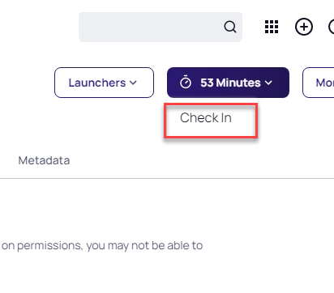
-
Reopen the Secret and see that the password has been changed
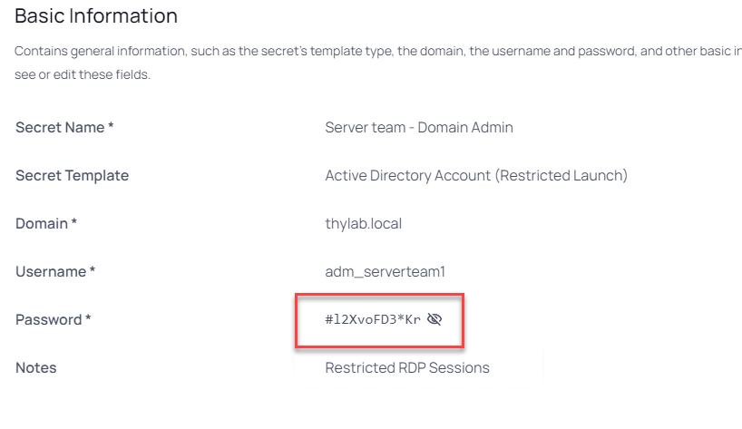
-
This is also conform the policy that we have defined and assigned to the folder
Conclusion
As summary the three security settings:
- IT Admins from the Thylab domain are allowed to use and see ALL secrets to access ALL servers AND must comment with checkout why they need access to the Thylab servers. After the session closes, the password needs to be rotated
- IT Admins from the Greensafe domain are allowed to ONLY see the secrets of their Legacy environment and use them on their servers and are allowed to retrieve passwords
- The UNIX admins are allowed to see ALL unix related secrets and can use them to access ALL Unix related machines but are not allowed to see the passwords
- For all users
- all sessions (RDP and SSH) MUST run proxied
During the testing of the configuration, the conclusion is that (proved by the running three scenarios using three different users) the configured policies work as requested.